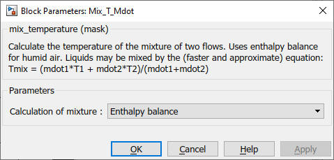

Mix_T_Mdot
Path: CARNOT/Basic/Hydraulics
Purpose:
Calculation of mixed values of temperature and mass flow after a Tee-piece.
Description:
The block calculates the values of temperature and mass flow rate after the
reassembly of two flows streams in a Tee-piece. The mass flows are added.
According to the selected calculation method the temperature is weighted
according to the mass flows:
Tmix = (T1*mdot1 + T2*mdot2)/(mdot1+mdot2)
or determined by the enthalpy balance:
h = (h1*mdot1 + h2*mdot2)/(mdot1+mdot2)
The enthalpy (h1, h2) is calculated by the function "enthalpy" in the
CARLIB and transformed to a temperature by an iteration
method in the function "enthalpy2temperature".
Input:
| T1 | : | temperature of the flow 1 in °C |
| mdot1 | : | mass flow of the flow 1 in kg/s |
| T2 | : | temperature of the flow 2 in °C |
| mdot2 | : | mass flow of the flow 2 in kg/s |
Output:
| T | : | temperature of the mixed flow in °C |
| mdot | : | mass flow of the mixed flow in kg/s |
Parameters and Dialog Box:

Examples:
Open the example explorer from the Matlab command window
ExampleBrowser
or load the examples via the CARNOT library.
Characteristics:
| Direct Feedthrough | : | Yes |
| Sample Time | : | Inherited from driving block |
| Vectorized | : | No |